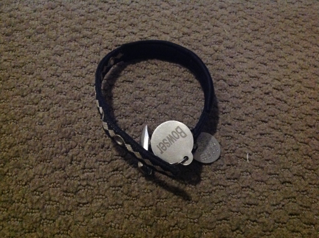

It all started when we were at our friends pool, he drank a lot of pool water cause he loved drinking it. His belly got so ful that he fell over and couldn't walk. We set him in his kennel to rest, and he died in the kennel. We took him to the animal hospital cause we thought he was still alive. He was actually dead and we all started screaming. We had ice cream to celebrate his life.
